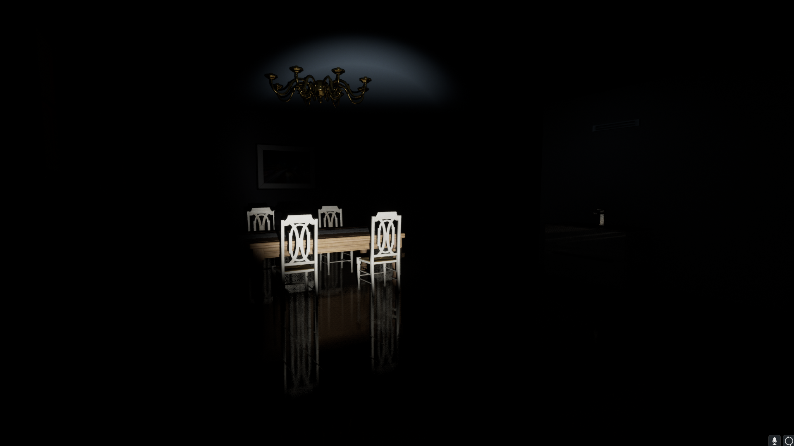

A mind at war with itself.
Deep Into Dreams is a first-person psychological horror game built in Unreal Engine. The player inhabits the fractured inner world of a protagonist whose mind has become a labyrinth — each level a deeper descent into a nightmare that reflects their psychological trauma.
The design philosophy centres on environmental storytelling: the world itself tells the story. Clues are embedded in architecture, lighting, and object placement. No HUD, no exposition dumps — the player must read the space to understand what happened and what's at stake.
"Horror isn't what you see. It's the gap between what you expect and what you find."
The cast of the unconscious.
Each character in the game is a psychological projection — a fragment of the protagonist's psyche given form. Their dialogue and behaviour shift depending on how far the player has progressed.
Elliot Marsh
Protagonist
A man whose waking life has fractured. The player experiences the world through his distorted perception — the unreliable narrator made playable.
The Watcher
Antagonist / Reflection
A shadow that mirrors Elliot's movements. It never attacks — it observes, and its presence alone signals that something in this room shouldn't be trusted.
Clara
Memory / Guide
A figure from Elliot's past who appears in safe zones. Her dialogue reveals backstory fragments — always gentle, always slightly wrong in ways the player must decode.
The Architect
Secondary Antagonist
The unseen force that reshapes the environment. Rooms that were passable become traps. The Architect represents Elliot's own self-sabotage given form.
What every room had to feel.
- No HUD, no handholding. All information lives in the environment — a flickering light means danger, a static painting means you've been here before.
- Sound as a narrative layer. Each room has a soundscape that deteriorates as the horror escalates — music box, then static, then silence.
- Tension through pacing, not jump scares. Slow-building dread is sustained by environmental inconsistencies the player gradually notices.
- Puzzle-as-memory. Every puzzle is a repressed memory. Solving it means confronting what happened — which unlocks the next area.
- Reward curiosity. Players who examine every detail find lore fragments that reshape their understanding of everything that came before.
How the nightmare was built.
Psychological Research
Studied dissociation, intrusive thought patterns, and trauma responses to ensure the psychological elements felt authentic rather than exploitative.
Narrative Architecture
Mapped the full story across five nightmare levels, each representing a stage of psychological collapse. Used a beat sheet to ensure emotional pacing never plateaued.
Environmental Scripting
Designed each room as a scene — wrote set-dressing briefs detailing object placement, lighting temperature, and audio cues for every space before building in-engine.
Puzzle Design
Created puzzles where the solution required re-examining earlier environments with new knowledge — rewarding attentive players while keeping the critical path clear.
Playtesting for Tone
Ran sessions specifically to gauge emotional response — noting the exact moment players felt confused vs. unsettled, and adjusting environmental cues accordingly.
Built with.
Unreal Engine 4
Notion (World Bible)
Google Docs
Miro
Scrivener
Environments & Documents.
DD1

DD2

DD3

DD4

DD5